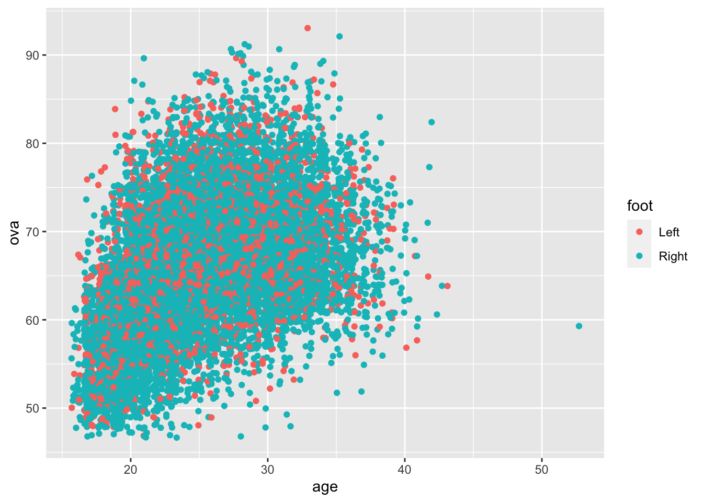
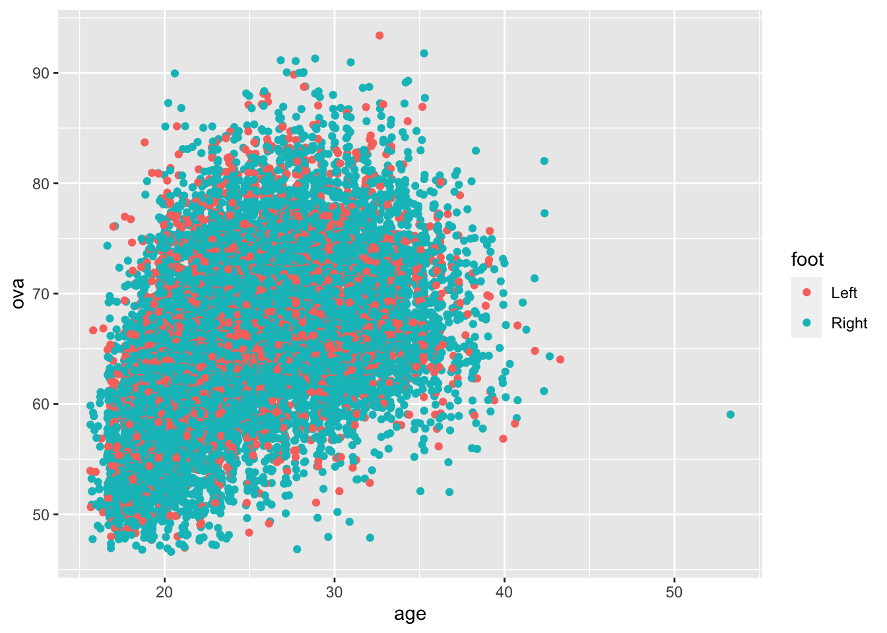

Checkout the Team & Contract column and separate by how long they have their contract period and their club. Then, find which players have played at a club for more than 10 years:
#cleanteamtime <- data %>%drop_na() %>%mutate('contract'=str_sub(team_contract, start =-13)) %>%mutate('team'=str_sub(team_contract, start =1, end =-15)) %>%select(-c(team_contract))#players 10+ yearsa <-str_sub(teamtime$contract, start =-4, end =-3) %>%as.numeric()
Warning in str_sub(teamtime$contract, start = -4, end = -3) %>% as.numeric():
NAs introduced by coercion
b <-str_sub(teamtime$contract, start =3, end =4) %>%as.numeric()
Warning in str_sub(teamtime$contract, start = 3, end = 4) %>% as.numeric(): NAs
introduced by coercion
# A tibble: 462 × 2
name Years_at_club
<chr> <dbl>
1 L. Messi 17
2 Casemiro 10
3 M. Neuer 12
4 K. Benzema 13
5 Sergio Ramos 16
6 S. Agüero 10
7 H. Kane 14
8 Sergio Busquets 15
9 H. Lloris 10
10 G. Chiellini 16
# … with 452 more rows
Modeling Data
Which positions get paid the most? Create a plot that displays this data:
Warning in mean.default(bp): argument is not numeric or logical: returning NA
worth %>%ggplot(aes(x = bp, y = value)) +geom_col(fill ='chartreuse3') +labs(title ='Position vs wage',subtitle ='Looking at the average wage (USD) per position',x ='Position',y ='Average Wage')
Let’s observe at who is the best technically. Find out who is the best overall, has the best individual characteristic on a FIFA Card (pace,shooting, passing, dribbling, defending, physical) and who is the best overall right / left foot.
# A tibble: 1 × 3
name bp ova
<chr> <chr> <dbl>
1 L. Messi RW 93
pace
# A tibble: 3 × 3
name bp pac
<chr> <chr> <dbl>
1 K. Mbappé ST 96
2 A. Davies LB 96
3 Adama Traoré RM 96
shooting
# A tibble: 1 × 3
name bp sho
<chr> <chr> <dbl>
1 Cristiano Ronaldo ST 93
passing
# A tibble: 1 × 3
name bp pas
<chr> <chr> <dbl>
1 K. De Bruyne CAM 93
dribbling
# A tibble: 1 × 3
name bp dri
<chr> <chr> <dbl>
1 L. Messi RW 95
defend
# A tibble: 1 × 3
name bp def
<chr> <chr> <dbl>
1 V. van Dijk CB 91
physical
# A tibble: 2 × 3
name bp phy
<chr> <chr> <dbl>
1 Casemiro CDM 91
2 A. Méndez CB 91
rightf
# A tibble: 1 × 3
name foot ova
<chr> <chr> <dbl>
1 Cristiano Ronaldo Right 92
leftf
# A tibble: 1 × 3
name foot ova
<chr> <chr> <dbl>
1 L. Messi Left 93
Statistical Analysis
Is there a correlation between:
a) age and overall rating?
b) aggression and defending?
c) weight and pace?
d) height and heading?
#age and overall ratingdata %>%ggplot(mapping =aes(x = age, y = ova, color = foot)) +geom_jitter()

cor(data$age, data$ova)
[1] 0.4662803
m <-lm(ova ~ age, data = data)summary(m)
Call:
lm(formula = ova ~ age, data = data)
Residuals:
Min 1Q Median 3Q Max
-25.8990 -4.1354 -0.3436 3.7952 27.1748
Coefficients:
Estimate Std. Error t value Pr(>|t|)
(Intercept) 48.3393 0.2435 198.52 <2e-16 ***
age 0.6898 0.0095 72.61 <2e-16 ***
---
Signif. codes: 0 '***' 0.001 '**' 0.01 '*' 0.05 '.' 0.1 ' ' 1
Residual standard error: 6.165 on 18977 degrees of freedom
Multiple R-squared: 0.2174, Adjusted R-squared: 0.2174
F-statistic: 5272 on 1 and 18977 DF, p-value: < 2.2e-16
Conclusions:
There seems a moderately strong, positive correlation between age and the overall rating, in that the older a player is, the higher the rating will be, on average. From the graph, the points are generally following this trend confirmed by the correlation being .46. I added in the dominant foot for the aesthetic and to see if it played a role in the correlation between the two, and it did not have any noticeable impact.
As for the summary of the model predicting overall rating by using age, this shows that the R squared is low (.21), meaning the variability of the data is lacking. In addition, there is a smaller p value than alpha (<2e-16 < .05), so there is at least some statistical significant correlation between the two. The coefficient means that for every year that a player ages, their rating will increase by .69 on average.
Overall, age is effective in predicting the overall rating of player.
#aggression and defendingdata %>%ggplot(mapping =aes(x = aggression, y = def)) +geom_jitter()

cor(data$aggression, data$def)
[1] 0.6604249
m2 <-lm(def ~ aggression, data = data)summary(m2)
Call:
lm(formula = def ~ aggression, data = data)
Residuals:
Min 1Q Median 3Q Max
-46.399 -7.889 2.670 8.937 38.851
Coefficients:
Estimate Std. Error t value Pr(>|t|)
(Intercept) 14.645867 0.304193 48.15 <2e-16 ***
aggression 0.633557 0.005229 121.16 <2e-16 ***
---
Signif. codes: 0 '***' 0.001 '**' 0.01 '*' 0.05 '.' 0.1 ' ' 1
Residual standard error: 12.35 on 18977 degrees of freedom
Multiple R-squared: 0.4362, Adjusted R-squared: 0.4361
F-statistic: 1.468e+04 on 1 and 18977 DF, p-value: < 2.2e-16
Conclusions:
The data above demonstrates that the more aggressive a player is, the better defender they will be on average, based on the strong and positive correlation of .66. In reality this seems to be related because as a defender, it is imperative that you are aggressive when confronted with an attacker or a ball that you can win.
The model tells us that there is a statistical significant correlation when aggression rating predicts the defensive rating since the p value is significant. The R-squared is moderate, and shows a decent variability of data at .44. The coefficient is stating that for every increase in aggression rating, the defensive rating will increase by .66, for any player on average.
To conclude, there is some influence on the defensive rating from the aggression rating, in this data set.
#weight and pace ratingpaclbs <- data %>%mutate('Weight'=str_extract(weight, "[0-9]+")) %>%mutate('lbs'=as.numeric(Weight))paclbs %>%ggplot(mapping =aes(x = pac, y = lbs)) +geom_jitter()
cor(paclbs$lbs, paclbs$pac)
[1] -0.3261879
m3 <-lm(pac ~ lbs, data = paclbs)summary(m3)
Call:
lm(formula = pac ~ lbs, data = paclbs)
Residuals:
Min 1Q Median 3Q Max
-43.882 -5.988 0.386 6.587 30.034
Coefficients:
Estimate Std. Error t value Pr(>|t|)
(Intercept) 104.409411 0.780883 133.71 <2e-16 ***
lbs -0.223446 0.004701 -47.53 <2e-16 ***
---
Signif. codes: 0 '***' 0.001 '**' 0.01 '*' 0.05 '.' 0.1 ' ' 1
Residual standard error: 10.09 on 18977 degrees of freedom
Multiple R-squared: 0.1064, Adjusted R-squared: 0.1064
F-statistic: 2260 on 1 and 18977 DF, p-value: < 2.2e-16
Conclusions:
This comparison between the weight of a player and how fast the player is, does not seem to have much magnitude in terms of correlation (-.32). The negative symbol is interesting, because it means that the less weight you are, the faster you will be on average, which makes practical sense as well as the similarity of the graph. I wonder why this would not be a higher correlation.
The model, where pounds predicts pace, has a variety of useful statistical information that can be used to create a conclusion. For instance, the p value being lesser than the alpha value (<2.2e-16 is less than .05), tells us that there is some sort of correlation between pace rating and weight (in pounds) of a player, on average. As for the R squared value, it shows how little variability there is for the data (.106), which does not provide much help when predicting. The coefficient signifies for every pound that is gained, the pace rating of a player will decrease by a factor of .22.
Generally, there is some correlation between pace and weight.
#height and headinginches <- data %>%drop_na() %>%mutate('n'=as.numeric(str_sub(height, start=1, end =1))) %>%mutate('n1'=as.numeric(str_sub(height, start =3, end =-2))) %>%mutate('inc'= (n *12) + n1) %>%select(heading_accuracy, n, n1, inc)inches %>%ggplot(mapping =aes(x = inc, y = heading_accuracy)) +geom_jitter()
cor(inches$heading_accuracy, inches$inc)
[1] 0.01102813
m4 <-lm(heading_accuracy ~ inc, data = inches)summary(m4)
Call:
lm(formula = heading_accuracy ~ inc, data = inches)
Residuals:
Min 1Q Median 3Q Max
-47.343 -7.775 3.225 12.012 40.870
Coefficients:
Estimate Std. Error t value Pr(>|t|)
(Intercept) 46.87338 3.33845 14.040 <2e-16 ***
inc 0.07104 0.04676 1.519 0.129
---
Signif. codes: 0 '***' 0.001 '**' 0.01 '*' 0.05 '.' 0.1 ' ' 1
Residual standard error: 17.29 on 18977 degrees of freedom
Multiple R-squared: 0.0001216, Adjusted R-squared: 6.893e-05
F-statistic: 2.308 on 1 and 18977 DF, p-value: 0.1287
Conclusions:
This data is strange, because it has an incredibly weak correlation (.01) and the graph explains it, but why there is a grouping of points almost separate from the bigger trend? Generally, it makes sense that taller players will have better heading accuracy, yet the grouping on the left seems to disprove this practical idea of being tall but bad at heading. The second grouping seems to follow an overall trend that make logical sense, but is heavily impacted by that first grouping.
This model where the height (in inches) of a player predicts the heading ability of a player, is not useful for a variety of reasons. For example, the R squared is tragically below several decimal places below 1, which signifies a very weak variability in the data. The p value (.12) is greater than alpha (.05), that means that there is no proof that there is some correlation between the two, statistically. The coefficient explains that for every inch that a player grows, there will be an increase in heading accuracy by a rating of .07.
Predicting
FIFA calculates the overall rating of each player through a variety of variables. Since there is a lot that goes into each position (ex. defensive creativity doesn’t impact a striker as much as it does a defender), find a model that predicts the overall rating of only defenders; choose the variables you think fit a defender best and simplify the model.